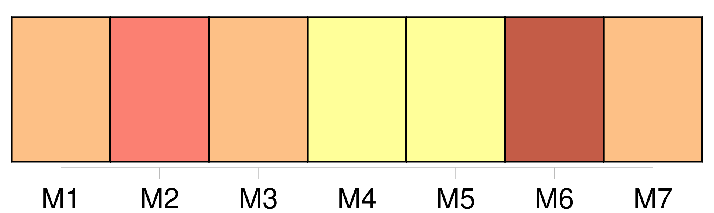

Longueur nb maillons : 50 mentions |
 |
Théophile Gautier Deux tours rondes, coiffées de toits en éteignoir, flanquaient les angles d' [un bâtiment] , sur la façade [duquel] deux rainures profondément entaillées trahissaient l'existence primitive d'un pont-levis réduit à l'état de sinécure par le nivelage du fossé, et donnaient [au manoir] un aspect assez féodal, avec leurs échauguettes en poivrière et leurs girouettes à queue d'aronde. [1 phrases] Le voyageur qui eût aperçu de loin [le castel] dessinant [ses] faîtages pointus sur le ciel, au-dessus des genêts et des bruyères, [l'] eût jugé une demeure convenable pour un hobereau de province ; mais, en approchant, son avis se fût modifié. Le chemin qui menait de la route à [l'habitation] s'était réduit, par l'envahissement de la mousse et des végétations parasites, à un étroit sentier blanc semblable à un galon terni sur un manteau râpé. [6 phrases] Un seul battant s'ouvrait et suffisait à la circulation des hôtes évidemment peu nombreux [du castel] , et contre le jambage de la porte s'appuyait une roue démantelée et tombant en javelle, dernier débris d'un carrosse défunt sous le règne précédent. Des nids d'hirondelles oblitéraient le faîte des cheminées et les angles des fenêtres, et, sans un mince filet de fumée qui sortait d'un tuyau de briques et se tortillait en vrille comme dans ces dessins de maisons que les écoliers griffonnent sur la marge de leurs livres de classe, on aurait pu croire [le logis] inhabité : maigre devait être la cuisine qui se préparait à ce foyer, car un soudard avec sa pipe eût produit des flocons plus épais.
C'était le seul signe de vie que donnât [la maison] , comme ces mourants dont l'existence ne se révèle que par la vapeur de leur souffle. En poussant le vantail mobile de la porte, qui ne cédait pas sans protester et tournait avec une évidente mauvaise humeur sur ses gonds oxydés et criards, on se trouvait sous une espèce de voûte ogivale plus ancienne que le reste [du logis] , et divisée par quatre boudins de granit bleuâtre se rencontrant à leur point d'intersection à une pierre en saillie où se revoyaient, un peu moins dégradées, les armoiries sculptées à l'extérieur, trois cigognes d'or sur champ d'azur, ou quelque chose d'analogue, car l'ombre de la voûte ne permettait pas de les bien distinguer. [16 phrases] Ce cabinet grotesque, comme on disait alors, témoignait, tout ruiné qu'il était, d'une certaine aisance disparue et du goût pour les arts des anciens possesseurs [du castel] [4 phrases]
En revenant vers [le castel] , on apercevait la façade opposée plus ravagée et plus dégradée que celle qui vient d'être décrite, les derniers maîtres ayant tâché de garder au moins l'apparence, et concentré leurs faibles ressources sur ce côté. [1 phrases]
Au seuil du chenil, un chien unique, flottant dans sa peau trop large où ses muscles détendus se dessinaient en lignes flasques, sommeillait le museau posé sur l'oreiller peu rembourré de ses pattes ; il paraissait tellement habitué à la solitude [du lieu] qu'il avait renoncé à toute surveillance, et ne s'inquiétait point, comme les chiens, même assoupis, ont coutume de le faire, au moindre bruit qui se fait entendre. [50 phrases]
Dans l'une d'elles se voyait une paillasse gonflée de feuilles sèches de blé de Turquie, avec une couverture de laine bise qui paraissait être le lit de l'unique valet [du manoir]
Comme le lecteur doit être las de cette promenade à travers la solitude, la misère et l'abandon, menons -le à la seule pièce un peu vivante [du château désert] , à la cuisine, dont la cheminée envoyait au ciel ce léger nuage blanchâtre mentionné dans la description extérieure [du castel] [7 phrases] Qui devait s'asseoir à ce modeste couvert apporté dans [ce manoir sans habitants] ?? [4 phrases] « Bien, bien, Béelzébuth, dit le vieillard en se courbant pour passer à deux ou trois reprises sa main calleuse sur le dos pelé du chat, afin de n'être pas en reste de politesse avec un animal ; je sais que tu m'aimes, et nous sommes assez seuls [ici] , mon pauvre maître et moi, pour n'être pas insensibles aux caresses d'une bête dénuée d'âme, mais qui pourtant semble vous comprendre. [19 phrases] Il est vrai que [ce château] est si triste qu'on ne saurait s'ennuyer davantage ailleurs. [4 phrases]
On voyait qu'ils se connaissaient de longue main et se tenaient souvent compagnie dans la solitude [du château] Le baron de Sigognac, car c'était bien le seigneur de [ce castel démantelé] qui venait d'entrer dans la cuisine, était un jeune homme de vingt-cinq ou vingt-six ans, quoique au premier abord on lui en eût attribué peut-être davantage, tant il paraissait grave et sérieux. [15 phrases] Les paysans, habitués à les vénérer sur le dos du vieux baron, ne les trouvaient pas ridicules sur celui du fils, et ils les saluaient avec la même déférence ; ils n'apercevaient pas plus les déchirures du pourpoint que les lézardes [du château] [12 phrases] Un reste de feu, qu'avivait la rafale engouffrée dans la cheminée, colorait de reflets bizarres le groupe réuni autour de la table avec une sorte d'intimité triste qui faisait ressortir encore la mélancolique solitude [du château]
D'une famille jadis puissante et riche il ne restait qu'un rejeton isolé, errant comme une ombre dans [ce manoir peuplé par ses aïeux] ; d'une livrée nombreuse il n'existait plus qu'un seul domestique, serviteur par dévouement, qui ne pouvait être remplacé ; d'une meute de trente chiens courants il ne survivait qu'un chien unique, presque aveugle et tout gris de vieillesse, et un chat noir servait d'âme au logis désert. [14 phrases] Le châtelain de [ce triste manoir] , habitué à ces lugubres symphonies, n'y faisait aucune attention. [1 phrases]
Ce chat visionnaire, au nom et à la mine diaboliques, eût alarmé un moins brave que le Baron ; car il avait l'air de savoir bien des choses apprises dans ses courses nocturnes, à travers les galetas et les chambres inhabitées [du castel] ; plus d'une fois il avait dû faire, au bout d'un corridor, des rencontres qui eussent blanchi les cheveux d'un homme. [3 phrases]
Les grains de poussière tombent si tristement dans le sablier par une nuit noire et pluvieuse au fond d' [un château ruiné] [qu'] entoure un océan de bruyères, sans un seul être vivant à dix lieues à la ronde! [2 phrases]
Les fiefs, les métairies, les fermes et les terres qui relevaient [du château] s'étaient envolés pièce à pièce ; et le dernier Sigognac, après des efforts inouïs pour relever la fortune de la famille, efforts sans résultats parce qu'il est trop tard pour boucher les voies d'eau d'un navire lorsqu'il sombre, n'avait laissé à son fils que [ce castel lézardé] et les quelques arpents de terre stérile qui [l'] entouraient ; le reste avait dû être abandonné aux créanciers et aux juifs. [1 phrases] Privé tout jeune de sa mère morte de tristesse dans [ce château délabré] , en songeant à la misère qui devait peser plus tard sur son fils et lui fermer toute carrière, il ne connaissait pas les douces caresses et les tendres soins dont la jeunesse est entourée, même dans les familles les moins heureuses. [7 phrases] Un hurlement prolongé de Miraut s'élevant au milieu du silence vint bientôt confirmer la pantomime du chat ; il se passait décidément quelque chose d'insolite aux environs [du castel, d'ordinaire si tranquille] [5 phrases]
Trois coups frappés assez violemment à la porte [du castel] retentirent à intervalles mesurés et firent gémir les échos des chambres vides. Qui pouvait à cette heure venir troubler la solitude [du manoir] et le silence de la nuit?? [1 phrases]
Qui demandait à être reçu dans [cette auberge de la famine] , dans [cette cour plénière du Carême] , dans [cet hôtel de misère et de lésine] ? [8 phrases]
Les saluts accomplis, le burlesque personnage, prévenant sur les lèvres du Baron la question qui allait en jaillir, prit la parole d'un ton légèrement emphatique et déclamatoire : [3 phrases]
— L'hospitalité pour moi et mes camarades, des princes et des princesses, des Léandres et des Isabelles, des docteurs et des capitaines qui se promènent de bourgs en villes sur le chariot de Thespis, lequel chariot, traîné par des bœufs à la manière antique, est maintenant embourbé à quelques pas de [votre château] [3 phrases] — Quoique [ma demeure] soit assez délabrée et que je n'aie pas grand'chose à vous offrir, vous [y] serez toujours un peu moins mal qu'en plein air par une pluie battante. [5 phrases]
Ce renfort inattendu, et surtout l'expérience de Pierre, eurent bientôt fait franchir le mauvais pas au lourd chariot, qui, dirigé sur un terrain plus ferme, atteignit [le château] , passa sous la voûte ogivale et fut rangé dans la cour. [5 phrases]
Je vis seul en [ce manoir] , ne recevant jamais personne, et vous voyez, sans que je vous le dise, que la fortune n'habite pas céans. [10 phrases]
Il aurait bien voulu s'approcher de la table et prendre sa part de cette frairie à la Gargantua si en dehors des sobriétés érémitiques de [la maison] ; mais la vue de tous ces nouveaux visages l'épouvantait et sa poltronnerie combattait sa gourmandise. [3 phrases]
De faibles rougeurs coloraient les joues pâles des portraits, et si les douairières vertueuses, engoncées dans leurs collerettes et roides sous leur vertugadin, prenaient un air pincé à l'aspect des jeunes comédiennes folâtrant dans [ce grave manoir] , en revanche, les guerriers et les chevaliers de Malte semblaient leur sourire du fond de leur cadre et se trouver heureux d'assister à pareille fête, à l'exception de deux ou trois vieilles moustaches grises boudant obstinément sous leur vernis jaune, et gardant, malgré tout, les mines rébarbatives dont le peintre les avait dotées. [1 phrases]
Le délabrement des meubles et des tentures était moins visible, et le spectre pâle de la misère semblait avoir abandonné [le château] pour quelques instants. [6 phrases] Le jeune maître [du château] put alors étudier tout à son aise les physionomies de ses hôtes vivement éclairées et ressortant avec un plein relief. |

|
Il est possible de télécharger la ressource sur la page Ortolang |
Si vous avez des questions ou vous voyez des erreurs, merci d'envoyer un mail à silvia.federzoni89@gmail.com |